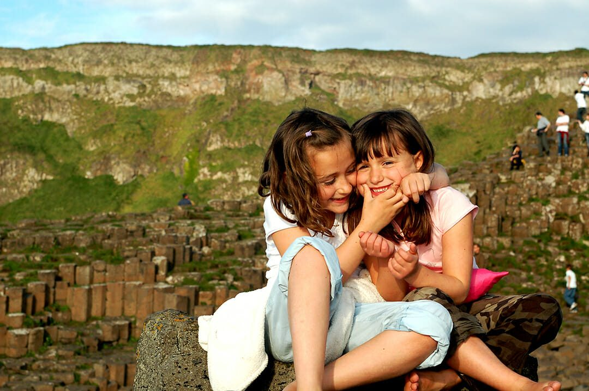
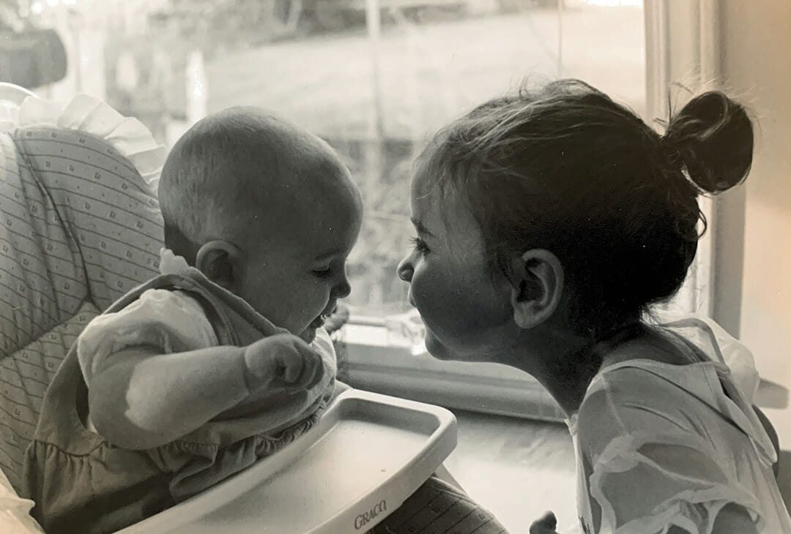

Christiana’s Story – How Photography Stole My Heart (and My Wallet ;)

My photography really started when I started having kids. Before then, photography was just about catching snapshots of the usual – friends and places. More of a record keeper and not an art form. Once I had my girls though, I wanted to capture our story together as beautifully as I could!
It started on Film
When my oldest daughter, Gillian, was about 18 months, my father-in-law gifted me his SLR (film camera). I loved to take photos of Gillian and her friends and then our other daughter, Ruthie, once she was on the scene! It was an old camera that was all manual. The kind that you have to advance the film with your thumb, focus manually with the focus ring on the lens, and adjust your aperture and shutter speed yourself and then take in the film to be developed loosing all memory of what you took pictures of in the first place!


Our Big Adventure
When the girls were about 5 and 8, we chose to take a job in Dublin, Ireland. Since digital photography was starting to catch up to the quality of film, I decided to buy low-end DSLR to record our new adventures in Ireland. You’d think that previously having a SLR camera that was all manual would set me up for success in transferring to DSLR but I always say that it was like knowing how to drive a car and expecting to fly a space ship. I didn’t get it!
That’s when I thought, “I know! I’ll take a Photography Class?!” Seemed like a great solution, however, it left me more confused than before! The teacher was throwing out terms of photography like I was supposed to know what they were. Since I’d been using a SLR camera at this point for over 5 years, I was too embarrassed to say, “Um, sorry, can we just go back a bit? What is aperture?” It was 6 week long class that took place in a classroom setting where we faced a screen, we were told photography stuff and then had to go home and practice on our own without any help.
Nope. That didn’t help!
I finally just started teaching myself. I took the camera with me everywhere I went and when I couldn’t make something work, I’d go online and figure it out. I made lots of mistakes and learned from them. I started a steady diet of photography – looking at photos on Flickr, reading blogs, following portrait photographers and getting on a few forums. Even though I took that initial photography class, I still consider myself a “self taught” photographer. Because I had to figure this out on my own in a way that made sense to me, I think that gives me an advantage to teaching photography because I know how confusing the terms of photography can be.
Once I started to grasp the basics, I was thrilled what photography opened up in me. There’s nothing quite like capturing an image that you’re proud of. I’ll never tire of that feeling! It was also such a gift to have this happen when we were living in Ireland where we are exploring not only Ireland but little hops over to the Continent as well.
Here are just of few of the several thousands I took while we lived in Ireland! –


I was hooked!
Since then, I’ve had many more gifts added to the pile that photography has given me. It’s brought people into my life, allowed me to continue to learn and grow and helped me slow down and savor. It helps me see beauty in the every day. Photography has helped me heal in times of grief and many more joyous offerings. I’m so glad I stuck with it!
As I said, I feel like being self taught has given me an advantage in teaching. I don’t assume people know what “aperture” is (or any other terms of photography), does, means or how to change it and why you should! I love showing people how to open up this gift for themselves!
I was a little bit joking with the title about photography stealing my wallet…It can be an expensive hobby! I’ve spent money that I didn’t need to in various ways, either in classes that weren’t helpful or gear that someone said was a “must have”! I’ve also spent a lot of time trying to figure this all out. I want you to get the condensed version and up to speed as quickly as possible! My online courses or in-person classes are designed for beginners who have a desire to learn, without having to spend a lot of time and money in the process.
I’m looking forward to hearing what photography is unlocking for you! Check out one of our classes today!